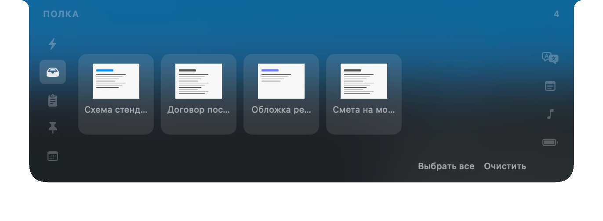

Полка файлов
Перетащите файл на панель, переключитесь в другое приложение и заберите его оттуда. Оригинал остаётся на месте: полка хранит ссылку, а не копию.
Здесь же локальные инструменты Apple Vision: распознать текст, удалить фон, сменить формат, уменьшить, собрать PDF из нескольких изображений. Результат — всегда новый файл рядом с исходным, а последнюю операцию можно отменить.